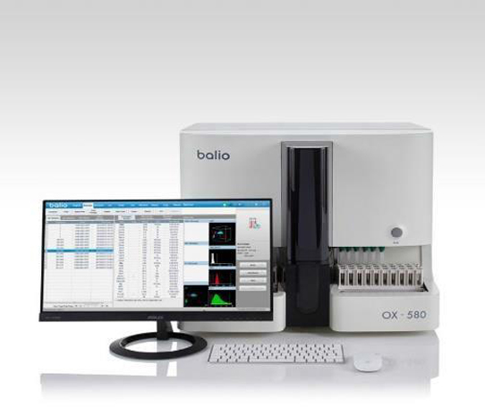
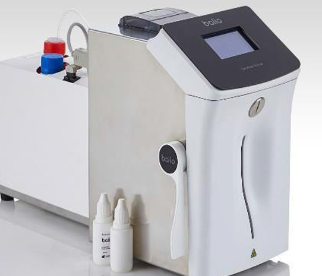
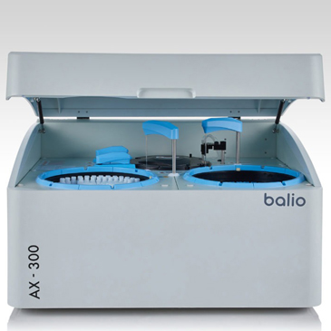
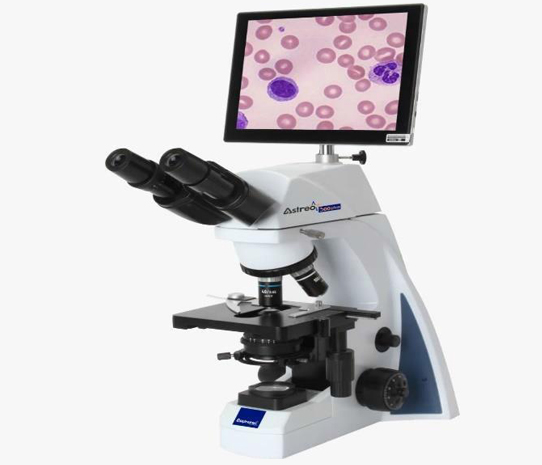
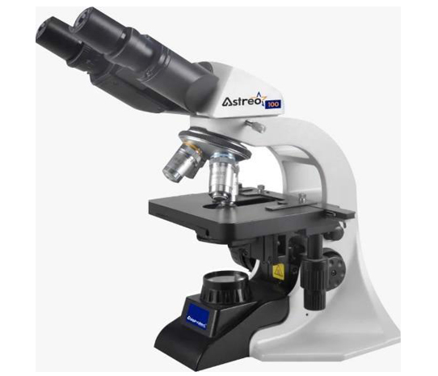
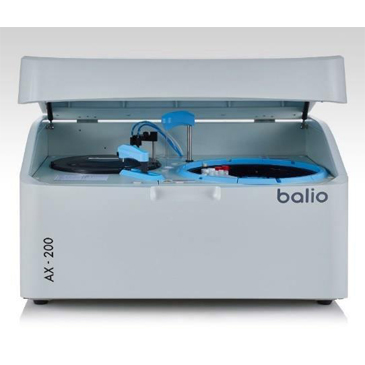
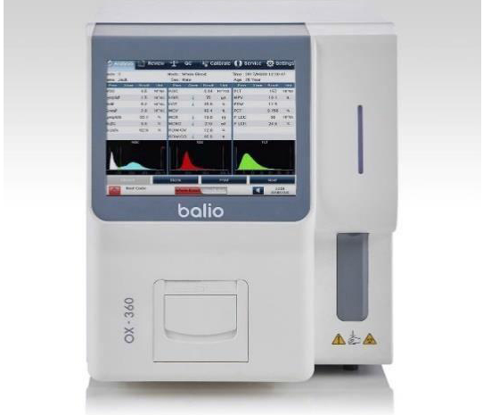
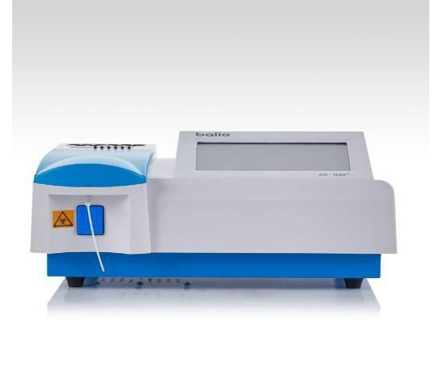
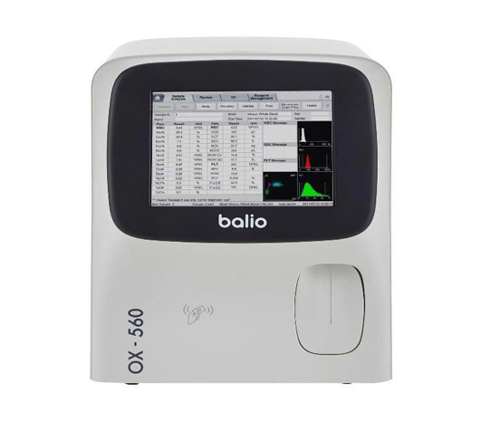
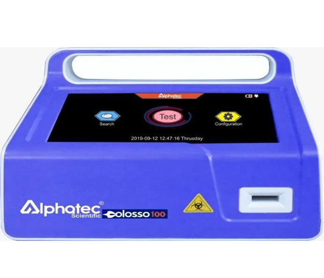

Toggle navigation
Home
About Us
Contact Us
All
BIOCHEMISTRY
HAEMATOLOGY
LIFE SCIENCE AND MOLECULAR BIOLOGY
more>>>

FULLY AUTOMATED HAEMATOLOGY ANALYZER OX-580
29 Parameters
3D scattergram
80 samples per hour

ELECTROLYTE ANALYZER BASIC
Reagents pack with integrated bin,
Blood, serum, plasma, urine and other substances,
Throughput: 60 samples per hour
Na+, K+, CL+, Li available .
Touch screen
Volume: 40µL,
Complete softeware,
Memory: 1000 tests.

AUTOMATED CHEMISTRY ANALYZER AX-300
Random Access up to 300 tests per hour
Low water consumption 120 sample positions.
80 refrigerated reagent positions.
8 wavelengths
Automatic blood clot detection Double agitator Semi-reflective mirrors photometer
81 cuvettes washed automatically

TRINOCULAR MICROSCOPE WITH TOUCH SCREEN AND CAMERA
Interpapillary distance adjustable between 48- 75mm.
Infinite Semi-flat Achromatic Objectives 4X, 10X, 40X, 100X.
Colour Touch Screen.
Possibility of Working with Mouse and Keyboard.
Interfaces such Excellent image quality
as: USB, Micro SD, HDMI, WIFI, BLUETOOTH.
Camera.
Video Format 2048 * 1536 15fps.
ANDROID system specially developed for Aliphatic Scientific Astreo line microscope applications. With the following characteristics

TRINOCULAR MIROSCOPE
Excellent image quality.
Comfortable handling with ergonomic design.
Better lighting with adjustable condenser
Convenient replacement with phase contrast and dark field capacitor.
Siedentop Trinculo Tilt Tube, Observation Angle 30 °Inclined.
Interpapillary distance adjustable between Semi-flat Achromatic Objectives 4X, 10X, 40X,48-75mm.infinite

AUTOMATED CHEMISTRY ANALYZER AX-200
Random access automated analyzerUp to 200 tests per hour.
Low water consumption
30 refrigerated sample positions.
60 refrigerated reagent positions.
8 wavelengths Liquid level detection Collision protection Semi-reflective mirrors photometer.
81 cuvettes automatically cleaned

HAEMATOLOGY ANALYZER OX-360
3 part –diff analyzer with 21 parameters
60 samples per hour
Storage capacity: 10,000 samples, upgradable on request
Sample whole blood volume: 14µl
Holes automatic cleaning before and after test.

SEMI-AUTOMATED CHEMISTRY ANALYZER AX-040
Storage: 10 000 samples
Sample Volume:0 -3000 µL, 400 µL recommended.
Absorbance range : 0 to 4.500 ABS, Absorbance precision : outside 0.0001 ABS and inside 0.00001 ABS
Absorbance range : 0 to 4.500 ABS, Absorbance precision : outside 0.0001 ABS and inside 0.00001 ABS

HAEMATOLOGY ANALYUZER OX-560
5 part-diff with 27 parameters (4 for research)
u60 test per hour
uLarge storage capacity:50,000 samples
uLaser scatter, chemical dye, flow cytometry
Power capability to flag abnormal cells
10.4 high resolution TFT touch screen

IMMUNOFLUORESCENCE ANALYZER
Intuitive software, easy to use
Result in 3 steps: obtain the sample, place imthe cassette, obtain the result
Portable and light (2kg)
With printer
Result from 3 minutes
Test: cardiac infectious, tyroidbones . diabetes and more.
FULLY AUTOMATED HAEMATOLOGY ANALYZER OX-580
29 Parameters
3D scattergram
80 samples per hour